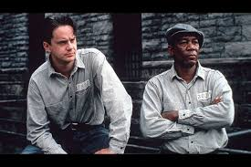

The Shawshank Redemption
Considerada una de las mejores películas de la historia, esta obra dirigida por Frank Darabont
cuenta la historia de Andy Dufresne, un hombre condenado injustamente que encuentra en la amistad
y la esperanza una forma de sobrevivir dentro de la prisión de Shawshank.
Una historia profunda sobre la resiliencia humana, la libertad y la importancia de no perder la esperanza.
